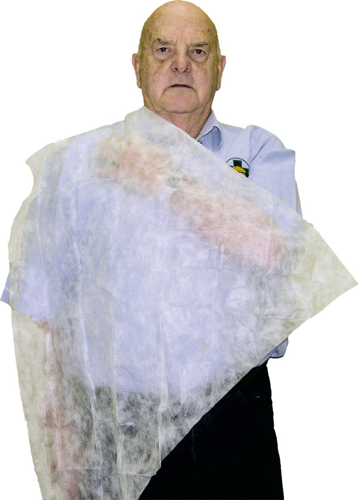
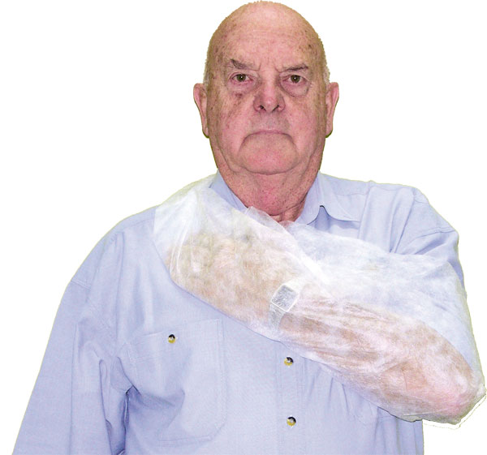

Fractures
Fractures
There are 206 bones in the human body. The skeleton holds our skin up, and bones act as factories for producing blood and essential blood cells through bone marrow. Bones are also integral to the body's strength.
Some bones have a protective function (skull), some a supporting function (pelvis), while others are for movement (fingers).
When a bone is broken, or fractured, it affects not only blood production and function, but there can be complications associated with the muscles, tendons, nerves and blood vessels that are attached, or are close, to the bone.
Fractures are generally classified as:
 Open – where there is a wound exposing the fracture site, or the bone is protruding from the skin.
Open – where there is a wound exposing the fracture site, or the bone is protruding from the skin.
 Closed – where the bone has fractured but has no obvious external wound.
Closed – where the bone has fractured but has no obvious external wound.
 Complicated – which may involve damage to associated vital organs and major blood vessels as a result of the fracture.
Complicated – which may involve damage to associated vital organs and major blood vessels as a result of the fracture.
Immobilisation is the preferred way to manage fractured limbs as it helps reduce movement and the pain associated with fractures. Immobilise the limb with a natural splint, such as another part of the body, improvised splints, cardboard, wooden or air splints.
Fractures may be caused a number of ways:
 Direct force; where sufficient force is applied to cause the bone to fracture at the point of impact.
Direct force; where sufficient force is applied to cause the bone to fracture at the point of impact.
 Indirect force; where force or kinetic energy, applied to a large, strong bone, is transmitted up the limb, causing the weakest bones to fracture.
Indirect force; where force or kinetic energy, applied to a large, strong bone, is transmitted up the limb, causing the weakest bones to fracture.
 Spontaneous or spasm-induced; where fractures are associated with disease and/or muscular spasms.These are usually associated with the elderly, and people with specific diseases affecting the bones.
Spontaneous or spasm-induced; where fractures are associated with disease and/or muscular spasms.These are usually associated with the elderly, and people with specific diseases affecting the bones.
Always exercise care when assessing an elderly casualty as the condition known as osteoporosis or 'Chalky Bones' causes bones to fracture easily, often in several places. Always suspect a fracture if an elderly person complains of pain or loss of power to a limb.
Be especially aware of fractures at the neck of the femur (near the hip), a very common fracture in the elderly.
Young children are also prone to fractures. Arm and wrist fractures are common with children. As young bones do not harden for some years, children's fractures tend to 'bend and splinter', similar to a broken branch on a tree – hence the common name 'greenstick fracture'.

Signs and Symptoms
Some, or all of the following:
 pale, cool, clammy skin
pale, cool, clammy skin
 rapid, weak pulse
rapid, weak pulse
 pain at the site
pain at the site
 tenderness
tenderness
 loss of power to limb
loss of power to limb
 associated wound and blood loss
associated wound and blood loss
 associated organ damage
associated organ damage
 nausea
nausea
 deformity
deformity

Care and Treatment
Care and treatment of fractures relies on immobilising and adequately splinting the injury. If the fracture is particularly complex, the wound associated with an open fracture maybe difficult to control.
If the pulse further down the limb cannot be restored by gentle and careful adjustment of the limb or with minor traction, the limb should be stabilised where it is.
Do not spend time attempting to splint instead of calling for urgent ambulance transport.
Circulation must be checked after a splint or sling has been applied. If the limb swells this will make the bandages tighter and this may cause circulation problems.
Indications that a bandage may be too tight include:
 Absent pulse below the bandage
Absent pulse below the bandage
 Pale/blue appearance below the bandage
Pale/blue appearance below the bandage
 Lack of warmth below the bandage
Lack of warmth below the bandage
 Pain
Pain
 Swelling
Swelling
 Tingling or loss of feeling in fingers or toes
Tingling or loss of feeling in fingers or toes
Generally, fractured limbs should be kept immobile until medical assistance arrives. However, in remote areas or where it is some time from medical aid, you may be required to treat as follows:
Fractured Arm/Collar Bone
 check for warmth or pulse to the hand, if no circulation:
check for warmth or pulse to the hand, if no circulation:
 if possible, gently and carefully adjust the position of the limb until pulse returns
if possible, gently and carefully adjust the position of the limb until pulse returns
 treat any wounds
treat any wounds
 pad bony prominences
pad bony prominences
 apply adequate splint
apply adequate splint
 secure splint above and below fracture
secure splint above and below fracture
 reassess pulse or return of colour/ warmth after splint applied
reassess pulse or return of colour/ warmth after splint applied
 apply appropriate sling
apply appropriate sling
 fractured lower arm
fractured lower arm
 apply arm sling
apply arm sling
 fractured upper arm
fractured upper arm
 apply collar and cuff sling
apply collar and cuff sling
 fractured collar bone
fractured collar bone
 apply elevated sling
apply elevated sling
 reassess pulse or return of colour/ warmth after sling applied
reassess pulse or return of colour/ warmth after sling applied
 adjust bandages or sling if required
adjust bandages or sling if required
Fractured Leg
 check for warmth or pulse to the foot, if no circulation:
check for warmth or pulse to the foot, if no circulation:
 if possible, gently and carefully adjust the position of the limb until pulse returns
if possible, gently and carefully adjust the position of the limb until pulse returns
 treat any wounds
treat any wounds
 immobilise the limb
immobilise the limb
 pad bony prominences
pad bony prominences
 reassess circulation below injury
reassess circulation below injury
 adjust bandages if required
adjust bandages if required
Fractured Pelvis
 call Triple Zero (000) for an ambulance
call Triple Zero (000) for an ambulance
 check for pulses in both legs
check for pulses in both legs
 bend legs at knees, elevate lower legs slightly and support on pillows or similar
bend legs at knees, elevate lower legs slightly and support on pillows or similar
 support both hips with folded blankets either side
support both hips with folded blankets either side
 discourage attempts to urinate
discourage attempts to urinate
 adjust bandages if required
adjust bandages if required
Care must be exercised with a suspected fractured pelvis. This injury may have serious complications. The casualty should always be transported by ambulance and not by alternative means unless absolutely essential.
Fractured Jaw
A common injury in certain contact sports is dislocation, or fracture, of the lower jaw (mandible). The casualty will have pain in the jaw, be unable to speak properly, and may have trouble swallowing.
 call Triple Zero (000) for an ambulance
call Triple Zero (000) for an ambulance
 support the jaw
support the jaw
 sit the casualty leaning slightly forward
sit the casualty leaning slightly forward
 rest the injured jaw on a pad held by the casualty
rest the injured jaw on a pad held by the casualty
 DO NOT apply a bandage to support the jaw.
DO NOT apply a bandage to support the jaw.
Observe the casualty carefully for signs of breathing difficulties and any indication they are becoming drowsy or unconscious.
Dislocations
Dislocations involve the displacement of bone from a joint. These injuries are often underestimated, and can have serious consequences in the form of damage to nerves and blood vessels. Many people have joints which dislocate easily due to a congenital condition, or weak ligaments, stretched by previous repeated dislocations.

Signs and Symptoms
 sudden pain in the affected joint
sudden pain in the affected joint
 loss of power and movement
loss of power and movement
 deformity and swelling of the joint
deformity and swelling of the joint
 tenderness
tenderness
 may have some temporary paralysis of the injured limb
may have some temporary paralysis of the injured limb

Care and Treatment
 RICE
RICE
 support limb in position of comfort
support limb in position of comfort
 seek medical aid
seek medical aid
 any attempt to reduce a dislocation is only to be made by a doctor
any attempt to reduce a dislocation is only to be made by a doctor
Slings
Use slings to support an injured arm, or to supplement treatment for another injury such as fractured ribs. Generally, the most effective sling is made with a triangular bandage. Every first aid kit, no matter how small, should have at least one of these bandages as essential items.
Although triangular bandages are preferable, any material, eg tie, belt, or piece of thick twine or rope, can be used in an emergency. If no likely material is at hand, an injured arm can be adequately supported by inserting it inside the casualty's shirt or blouse. Similarly, a safety pin applied to a sleeve and secured to clothing on the chest may suffice.
There are essentially three types of sling; the arm sling for injuries to the forearm, the elevated sling for injuries to the shoulder, and the 'collar-and-cuff' or clove hitch for injuries to the upper arm and as supplementary support to fractured ribs.
After applying any sling, always check the circulation to the limb by feeling for the pulse at the wrist, or squeezing a fingernail and observing for change of colour in the nail bed.
All slings must be in a position that is comfortable for the casualty. Never force an arm into the 'right position'.
Arm Sling
 Support the injured forearm approximately parallel to the ground with the wrist slightly higher than the elbow
Support the injured forearm approximately parallel to the ground with the wrist slightly higher than the elbow
 Place an opened triangular bandage between the body and the arm, with its apex towards the elbow
Place an opened triangular bandage between the body and the arm, with its apex towards the elbow
 Extend the upper point of the bandage over the shoulder on the uninjured side
Extend the upper point of the bandage over the shoulder on the uninjured side
 Bring the lower point up over the arm, across the shoulder on the injured side to join the upper point and tie firmly with a reef knot
Bring the lower point up over the arm, across the shoulder on the injured side to join the upper point and tie firmly with a reef knot
 Ensure the elbow is secured by folding the excess bandage over the elbow and securing with a safety pin
Ensure the elbow is secured by folding the excess bandage over the elbow and securing with a safety pin
Elevated Sling
 Support the casualty’s arm with the elbow beside the body and the hand extended towards the uninjured shoulder. Support the casualty’s arm with the elbow beside the body and the hand extended towards the uninjured shoulder
Support the casualty’s arm with the elbow beside the body and the hand extended towards the uninjured shoulder. Support the casualty’s arm with the elbow beside the body and the hand extended towards the uninjured shoulder
 Place an opened triangular bandage over the forearm and hand, with the apex towards the elbow
Place an opened triangular bandage over the forearm and hand, with the apex towards the elbow
 Extend the upper point of the bandage over the uninjured shoulder
Extend the upper point of the bandage over the uninjured shoulder
 Tuck the lower part of the bandage under the injured arm, bring it under the elbow and around the back and extend the lower point up to meet the upper point at the shoulder
Tuck the lower part of the bandage under the injured arm, bring it under the elbow and around the back and extend the lower point up to meet the upper point at the shoulder
 Tie firmly with a reef knot
Tie firmly with a reef knot
 Secure the elbow by folding the excess material and applying a safety pin, then ensure that the sling is tucked under the arm giving firm support
Secure the elbow by folding the excess material and applying a safety pin, then ensure that the sling is tucked under the arm giving firm support

'Collar-and-Cuff'
 allow the elbow to hang naturally at the side and place the hand extended towards the shoulder on the uninjured side
allow the elbow to hang naturally at the side and place the hand extended towards the shoulder on the uninjured side
 using a narrow fold triangular bandage, form a clove hitch by forming two loops – one towards you, one away from you
using a narrow fold triangular bandage, form a clove hitch by forming two loops – one towards you, one away from you
 put the loops together by sliding your hands under the loops and closing with a “clapping” motion
put the loops together by sliding your hands under the loops and closing with a “clapping” motion
 If you are experienced at forming a clove hitch, then apply a clove hitch directly on the wrist, but take care not to move the injured arm
If you are experienced at forming a clove hitch, then apply a clove hitch directly on the wrist, but take care not to move the injured arm
 slide the clove hitch over the hand and gently pull it firmly to secure the wrist
slide the clove hitch over the hand and gently pull it firmly to secure the wrist
 extend the points of the bandage to either side of the neck and tie firmly with a reef knot
extend the points of the bandage to either side of the neck and tie firmly with a reef knot
 allow the arm to hang comfortably. Should further support be required, eg. for support to fractured ribs, apply triangular bandages around the body and upper arm to hold the arm firmly against the chest
allow the arm to hang comfortably. Should further support be required, eg. for support to fractured ribs, apply triangular bandages around the body and upper arm to hold the arm firmly against the chest